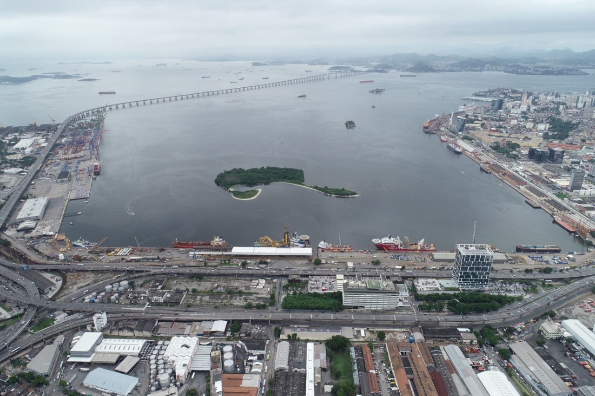

Curiosidades da Cidade Maravilhosa
História do Rio de Janeiro
Conhecer mais...
Porto do RIO
É um dos mais movimentados do país quanto ao valor das mercadorias e à tonelagem. Minério de ferro, manganês, carvão, trigo, gás e petróleo são os principais produtos escoados.
Conhecer mais...
Pontos Turistícos

Conhecer mais...